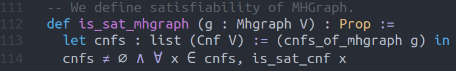

Graph Satisfiability
Home
Table of Contents
This is the subject of my PhD research — a novel graph decision problem.
- Dissertation summary (work in progress)
- 2sat result publication
- The complete set of minimal simple graphs that support unsatisfiable 2-CNFs
- 2sat result arXiv version (somewhat outdated)
- The complete set of minimal simple graphs that support unsatisfiable 2-CNFs
- GitLab
- private repository
- Slides from talk given at Theory of Computation reading group (UIUC Math)
- GraphSAT and other decision problems
- Slides for thesis defense
- PhD thesis
1 Definitions
1.1 SAT
Pick a countable set and call it our set of variables. A boolean literal is a variable or its negation such that we can assign boolean values to it each variable.
A boolean formula is said to be in Conjunctive Normal Form (CNF) if it is the conjunction of disjunctions of boolean literals. A CNF is satisfiable if there exists a truth assignment that satisfies it. Otherwise it is unsatisfiable.
1.2 \(\pi: CNFs \rightarrow Graphs\)
For every CNF we define a multi-hypergraph by erasing all negations and then treating clauses as hyperedges and conjunctions as the graph-join operation. We denote this projection map by \(\pi\).
Example: \[(a\vee \neg b) \wedge (b \vee \neg c) \wedge (\neg a \vee \neg c)\wedge d \longmapsto (ab),(bc),(ac),(d)\]
Here, \((d)\) should be interpreted as a loop at the vertex \(d\).
Table summarizing the effect of \(\pi\):
| Concepts in the CNF world | Concepts in the Graph world |
|---|---|
| Variables | Vertices |
| Literals | Vertices |
| Clauses | (hyper)Edges |
| 1-SAT clause | Loop |
| 2-SAT clause | Simple edge |
| 3-SAT clause | Hyperedge |
| CNF | Multi-hypergraph |
1.3 GraphSAT
A multi-hypergraph \(G\) is satisfiable if the set \(\pi^{-1}(G)\) is nonempty and every element of \(\pi^{-1}(G)\) is satisfiable. Otherwise it is unsatisfiable.
We let GraphSAT itself denote both the decision problem as well as the set of all satisfiable multi-hypergraphs.
2 Forbidden Graph Characterization
Our big result (published in the 2sat paper linked above) is the forbidden graph characterization of GraphSAT. We showed that 2GraphSAT (which is the set of all satisfiable simple graphs) can be equivalently defined as the set of all simple graphs that avoid the following 4 graphs as a topological minor.
- \(K_4\) i.e. the complete graph on four vertices
- Butterfly i.e. the graph \(ab,ac,ad,ae,bc,de\)
- Bowtie i.e. the graph \(ab,ac,bc,cd,de,df,ef\)
- \(K_{1,1,3}\) i.e. the graph \(ab,ac,ad,ae,bc,bd,be\)
We are attempting similar forbiddeng graph characterizations for multi-hypergraphs as well as infinite graphs.
3 In Python
I have created a Python package called graphsat. It recognizes clauses,
Cnfs, graphs, hypergraphs, and multi-hypergraphs. The package implements
local graph-rewriting, graph-satchecking, calculation of graph
disjunctions, as well as checking of new reduction rules.
This package is written in Python v3.9, and is publicly available under an the GNU-GPL-v3.0 license. It is set to be released on the Python Packaging Index as an open-source scientific package written in the literate programming style. We specifically chose to write this package as a literate program, despite the verbosity of this style, with the goal to create reproducible computational research and ensure that all the computations are repeatable and the code is reusable.
3.1 Algorithms
Currently, graphsat implements the following algorithms –
- For formulae in conjunctive normal forms (CNFs), it implements variables, literals, clauses, Boolean formulae, and truth-assignments. It includes an API for reading, parsing and defining new instances.
- For graph theory, the package includes graphs with self-loops, edge-multiplicities, hyperedges, and multi-hyperedges. It includes an API for reading, parsing and defining new instances.
- For satisfiability of CNFs and graphs, it contains a bruteforce algorithm, an implementation that uses the open-source sat-solver PySAT, and an implementation using the MiniSAT solver.
- Additionally, for graph theory, the library also implements vertex maps, vertex degree, homeomorphisms, homomorphisms, subgraphs, and isomorphisms. This allows us to encode local rewriting rules as well as parallelized grid-based searching for forbidden structures.
- Finally,
graphsathas a tree-based recursive reduction algorithm that uses known local-rewrite rules as well as algorithms for checking satisfiability invariance of proposed reduction rules.
3.2 Principles
graphsat has been written in the functional-programming style with the
following principles in mind –
- Avoid classes as much as possible. Prefer defining functions instead.
- Write small functions and then compose/map/filter them to create more complex functions (using the functools library).
- Use lazy evaluation strategy whenever possible (using the itertools library).
- Add type hints wherever possible (checked using the mypy static type-checker).
- Add unit-tests for each function (checked using the pytest framework).
3.3 Overview of the package
The package consists of several different modules.
Modules that act only on Cnfs –
cnf.pyConstructors and functions for sentences in conjunctive normal form (Cnf). cnf_simplify.pyFunctions for simplifying Cnfs, particularly (a∨b∨c) ∧ (a∨b∨¬ c) ⇝ (a ∨ b). prop.pyFunctions for propositional calculus – conjunction, disjunction and negation. Modules that act only on graphs –
graph.pyConstructors and functions for simple graphs. mhgraph.pyConstructors and functions for Loopless-Multi-Hyper-Graphs morphism.pyConstructors and functions for Graph and MHGraph morphisms. Modules concerning SAT and GraphSAT –
sat.pyFunctions for sat-checking Cnfs, Graphs, MHGraphs. sxpr.pyFunctions for working with s-expressions. operations.pyFunctions for working with graph-satisfiability and various graph parts. Modules that implement and compute local graph rewriting, rule reduction etc.
graph_collapse.pyFunctions for collapsing a set of Cnfs into compact graphs representation. graph_rewrite.pyAn implementation of the Local graph rewriting algorithm. - Finally, the test suite for each module is located in the
test/folder.
4 In Lean
I have formalized the definition of graph satisfiability in Lean. I
am working on project called leansat formalizing some of my 2-sat
results in Lean.

Figure 1: The definition of a satisfiable graph in Lean.
5 In Haskell
I am attempting to translate graphsat in Haskell as well. This is still a work
in progress.